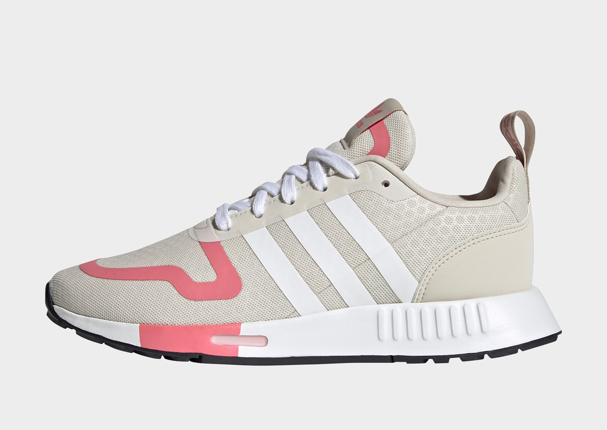
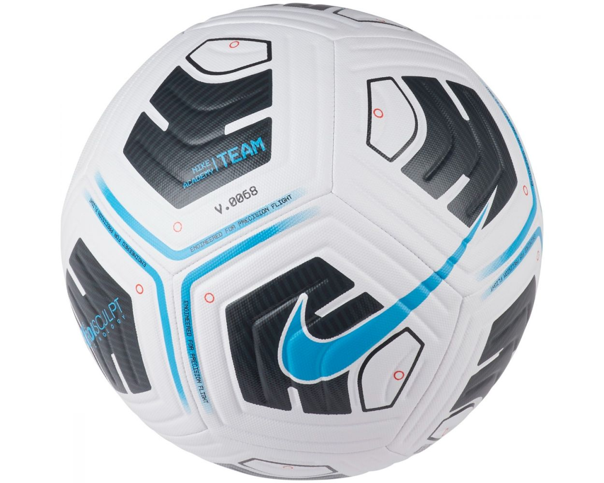

Output on GOOGLE LENS - waterbottle
Output on MOBILENET - Waterbottle
Result
Draw

Output on GOOGLE LENS - Treasure Key
Output on MOBILENET - Key
Result
Google lens is more accurate

Output on GOOGLE LENS - Adidas Shoes
Output on MOBILENET - Shoes
Result
Google lens is more accurate
